A Beginner's Guide to Dwarf Fortress, by a Beginner
Dwarf Fortress. Some say it's the most inscrutable video game ever. A few say it's the deepest. Most saw the ncurses ASCII interface and never bothered to try playing a game that looks like it predates Windows. A few downloaded it and quit in frustration from the steep learning curve and unintuitive user interface.
I tried it. I downloaded it. I finished the quickstart guide on the indispensable Dwarf Fortress Wiki. I played for a while, built up a fort of over a hundred dwarves over three ingame years. Then I quit, not from frustration, but from boredom. All I did was craft rock crafts all day long. No goblin wars, no necromancer raids, no forgotten beasts. No pump stacks, no magma, no caverns. I followed all the beginner's tutorials and then got stuck doing nothing, missing out on half the features of the game. But two months ago, on December 1, 2015, Toady One released the first major update since July 2014: Dwarf Fortress v0.42! Now, I thought, was the time to get back into the game, and really get into all its features. The goal of this post is simply to see every major feature, in a beginner's guide for people who understand the basics but want to see all the fun they could experience, through a playthrough―my first real one―of Dwarf Fortress.
Let's begin.


The structure of this post is simple. I took like a hundred screenshots of my progress through the playthrough, and I annotated each with an explanation of what I'm doing. The goal is that, after first having gone through the quickstart guide, you'll be able to skim through all of this and realize that Dwarf Fortress has a lot more to offer than what's explained in the quickstart guide.
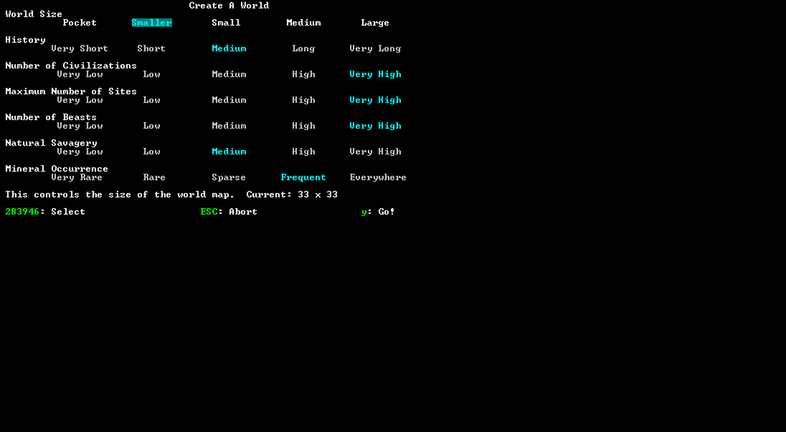Apparently, picking a smaller world increases FPS, so... I picked a Smaller world. Having more civilizations, sites, and beasts sounds cool to me, so I set them all to be Very High. I don't particularly care about history or natural savagery, but I do care that I can actually mine coal and iron, so I'll turn mineral scarcity to Frequent.
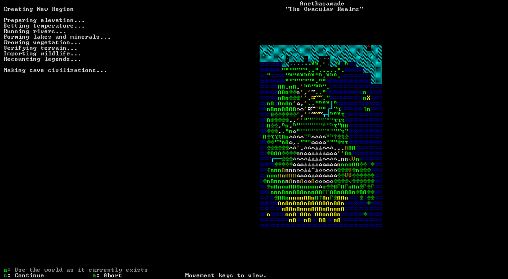
Now the world is generated. It's so much fun just to watch the towns spring up, the roads spread across the land, the dark goblin fortresses conquer the Nasty Desert, and I haven't even started playing! When choosing my site, I pressed f to find a place that had clay, soil, shallow metals, deep metals, flux, and no aquifier. The site I selected had all that as well as a good-coloured brook; basically, I had everything good and nothing bad.
 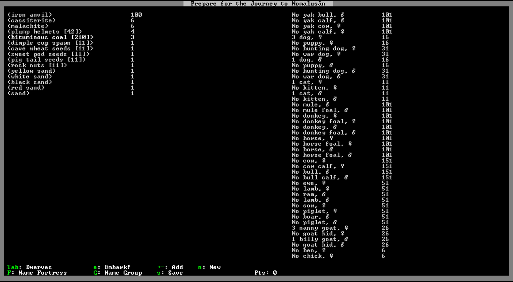
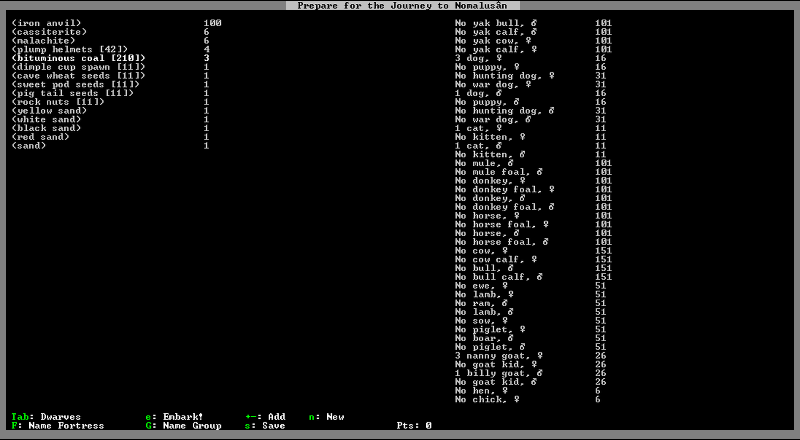One of the many reasons I used to find Dwarf Fortress so boring was my lack of a metal and clothing industry, mainly because I ran out of wood and couldn't find any coal to burn. So this run, I'm going to take 210 units of bituminous coal with me on embark, as well as cassiterite and malachite (ores of tin and copper) to forge the bronze battle axes and picks that I traded off for coal, coal, and more coal. It's time to strike the earth!


I started out on the side of this mountain. My number one priority was to, well, forge the bronze battle axes and picks that I traded off for coal, coal, and too much coal. The bronze battle axes aren't really necessary; since the wagon's made out of wood, I could have (and did also) just made wooden training axes that somehow still cut trees at the same rate. But since one unit of cassiterite and malachite combine to create eight bronze bars, I could make more than enough picks for everyone and have enough left over for two battle axes. It seems that I don't have any fire-safe materials to make the smelters out of, if you didn't know that in Dwarf Fortress, although a wood smelter obviously won't work, making a smelter out of bituminous coal is perfectly safe. Trust me, try it at home! Go to the stones in the status menu and mark bituminous coal as a non-restricted stone to do that. Remember to mark it as a restricted stone again after you're done, or else you'll end up with worthless bituminous coal crafts and bituminous coal large pots.

While my coal burner burned coal on the mountainside 24/7, here's my actual base, at sea (river) level, with the entranceway exactly in the centre of the map and a coal field on the side to store all my coke. Make sure you make wheelbarrows if you're going to move 1680 units of coke across half the map. I pastured all my animals in front of the entrance to catch any potential kobold thieves, and also because I didn't know pastures existed last time I played and all my animals starved to death. I accidentally designated the hallway to be channeled instead of mined and didn't realize it until the black suits bloomed. Get it? Black suits, cause all the blooming mushrooms or garden vegetables or whatever are clubs or spades? Ha ha ha dont worry ill remove all the jokes in the final draft.


Although I remembered to pasture my animals and so they didn't starve to death, I forgot that I didn't bring any food with me, and that dwarves can't eat bituminous coal. Better set up a farm, and quick, cause summer's already here! Another reason why Dwarf Fortress was boring was because I never had any troubles with food and drink production. Later I found out it was because I was setting up four 2x4 plots for each migrant wave, when actually a 5x5 plot is enough to support 265 (!) dwarves. You'll notice that this farm is 10x10, big enough to feed over a thousand. Maybe I can export all the wasted food to The Nasty Desert to feed the nasty starving goblin kidnapped children.
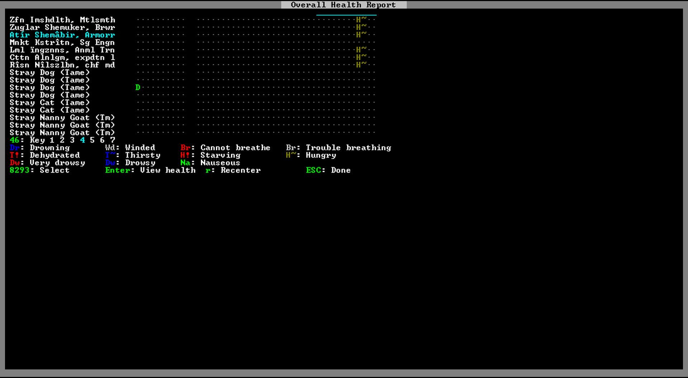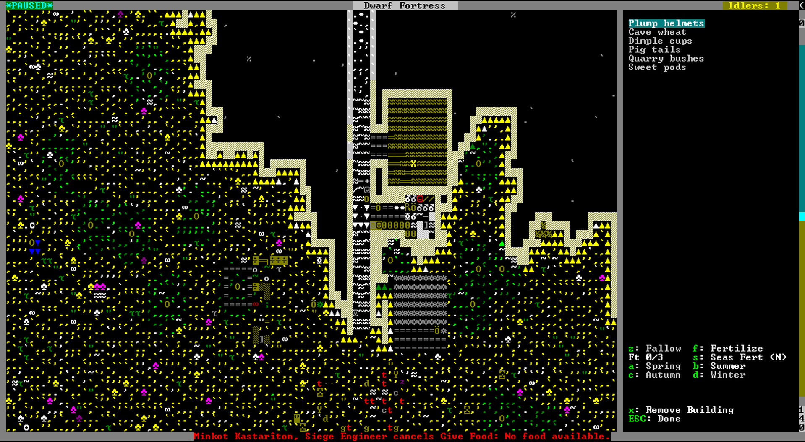I set up a lavish meagre dormitory beside my craftsdwarf's workshop, which was churning out rock crafts and crafts and crafts in preparation for the caravan in autumn. Meanwhile, everybody was starving and a honey badger kept on trying to crawl into the fort, though my unarmed dwarves would pummel him into unconsciousness every single time. Three days later, half his wounds would disappear and he'd try to crawl in again. Eventually he left, and this was the only interesting wildlife encounter in my entire game. This is what happens when you start in Calm surroundings, people; maybe pick Terrifying next time?


Finally, migrants! You can see how I set my work distribution here, too. I put the broker/bookkeeper/manager/leader and doctor as miners because nobody needs doctoring/leading/managing/keeping/breaking right now. The furnace operator is actually a new arrival; the metalsmith is doing all the bituminous coaling, and would become a legendary furnace operator momentarily. The animal trainer is cutting wood, making beds, and not animal training; the siege engineer is making rock stuff and not siege engineering; my farmer brewer is not farming and my farmer armorer is. Oh yeah, and the metalsmith is hunting for small creature. That's cause he's starving to death. Not a good sign.

Thankfully, all the migrants are literal Renaissance dwarves. Looks like this great mason/engraver who's also a competent speardwarf is a better doctor than the chief medical dwarf I pumped all those diagnostician stats into. But you know, in this economy, you'll never know when you'll be forced out of your clinic and into the respected profession of dwarven mining.
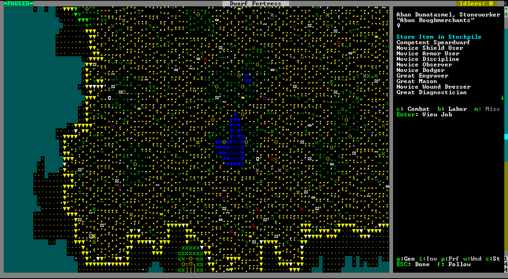I say thankfully because one migrant can hunt, even though she's apparently scared of mortally wounded gazelles. Also, the three fisherdwarf migrants probably believe incorrectly that their catches, um, mussel for a lot of money. sorry


Now, after everybody's stuffed themselves full of chopped gazelle liver roast and mussel roast, prepared with minced mussel, well-minced mussel, finely minced mussel, and minced raw mussel, my farm finally yields something. My coal field was also full, which meant it was time to really start digging deep underground. Actually, no: it's autumn, and it's time to build that trade depot and get rid of all my stupid rock crafts. As soon as autumn comes, if you don't have a trade depot, you better be building that right away.
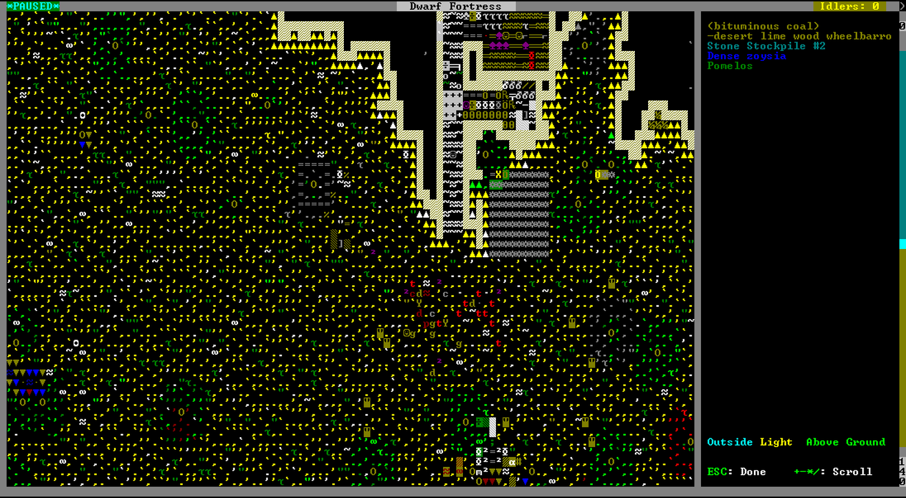
I kept the pots to keep my booze in, now that I actually had plants to brew. Large pots hold twice as much as the equivalent barrel, which makes them twice as good. When trading, I sold off all my rock crafts and stupidly expensive mussel roasts to buy as many seeds, thread, and leather as possible. Everything else I could basically make in the fortress; actually, everything period I could make in the fortress, but I didn't want to set up a leather tanning (read: turkey slaughtering) operation or grow so many pig tails with only two farmers, and besides, I had to do something with all the money mussel roasts were worth.


 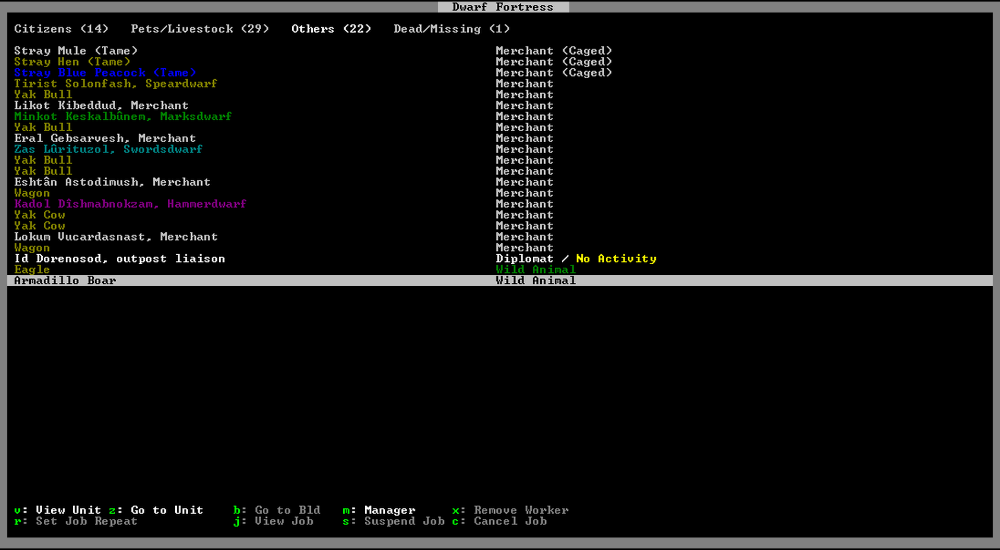
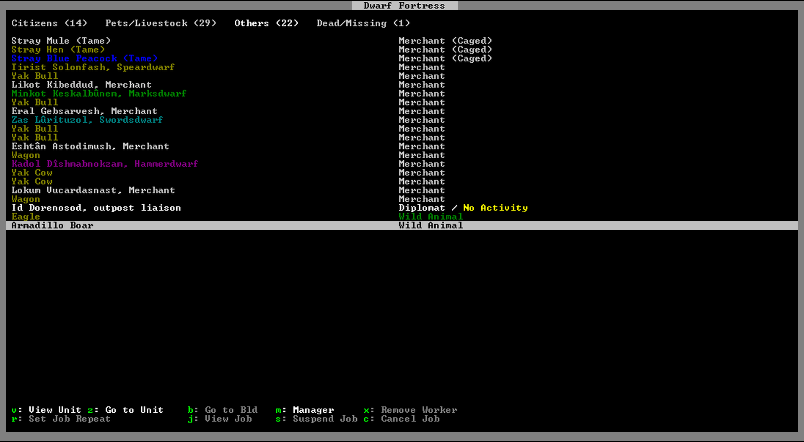Just as the caravan arrived in my trade depot proper, a new migrant wave arrived! Sorry folks, you'll have to all sleep in that corridor through which the caravan will soon crush your sleeping bodies. Next priority, now that nobody will ever starve or dehydrate: actually start digging into the mountain. Downwise.
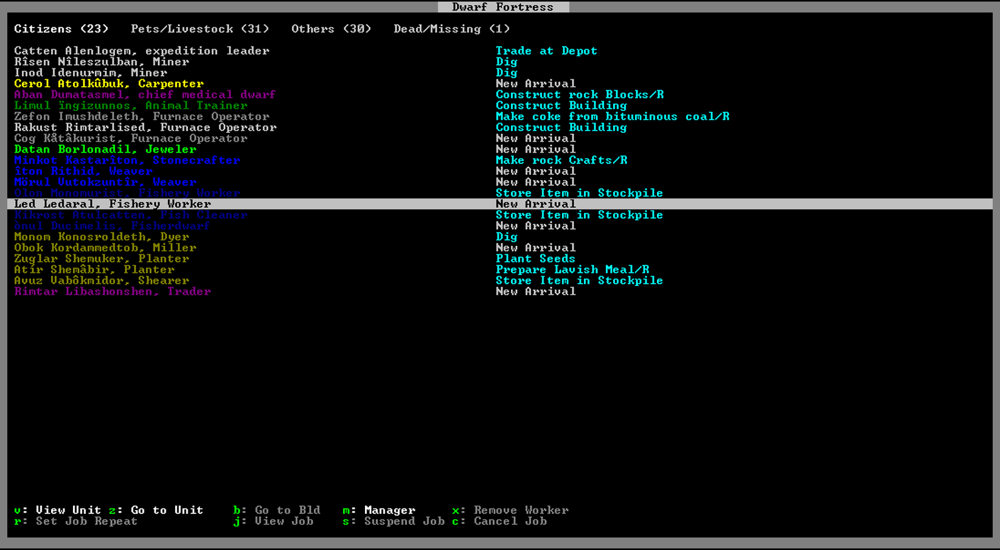
Now's a great time to open up Dwarf Therapist, another indispensible resource for Dwarf Fortress. Dwarf Therapist lets you look at all of your dwarves at once instead of keying through pages and pages of menus. You get to see their levels in every skill and most importantly, you can toggle their labours directly in Dwarf Therapist! This post is not a paid endorsement by Dwarf Therapist™ Ltd. Co. Inc. I organized my dwarves into two categories, the haulers and the non-haulers. The non-haulers have important jobs to do, like mining or farming or burning the rest of my bituminous coal. All the other dwarves can do whatever they want and it won't matter.


Here's me buying all their seeds and thread and leather. Also, here's me realizing that I made a bituminous coal large pot because I forgot to mark it as a restricted stone. Finally, here's the merchants leaving and crushing all the poor dwarves sleeping in that dormitory hallway.

All the bituminous coal on the mountainside has either been wheelbarrowed into a stockpile or made into coke, and I'm now left with three legendary furnace operators and a lot of coke to haul underground. How did my digging deep underground operation go, by the way? Well, I basically dug that 9-tile up/down stairway down 11 floors and made big storage areas around every single floor. Still, so. much. coke.


Winter was here, and everything was looking fine and good. I was setting up an actual dormitory for people to actually sleep without being crushed by caravans, an actual dining hall for people to actually eat with tables and chairs instead of straight from the barrel large pot, and an actual uh, location. Locations are new in v0.42, and part of the reason I wanted to play Dwarf Fortress again. Procedurally generated music! Places to listen to poetry! Ostrich cocks!

But suddenly, I had a strange mood on my hands. Now this wasn't such a big problem. The dwarf was a weaver, and I literally just bought the entire caravan's supply of thread. Well, it wasn't supposed to be such a big problem, except that apparently weavers take over clothier's shops, and I didn't have any cloth. No problem, I'll just tell my other Great Weaver to weave all the thread I bought into cloth. But all I got was: "Weaver cancels Weave Thread into Cloth: Needs 1 unused collected plant thread." Turns out the problem was some sort of bug with the trade depot; all my thread was in the depot (since I just bought them), and after I deconstructed the depot, Mörul Vutokzuntîr got right to work. Dwarf Fortress is still in alpha, and especially so soon after a new major release, there's bound to be tons of bugs.


Otherwise, fortress life was pretty dull. I added chairs and tables to my new definitely-not-a-strip-club location, which drastically cut the number of idle dwarves in my fort, since now half the fort spends half their time socializing and listening to poetry. I made actual individual bedrooms and finally assigned my bookkeeper to start keeping books. I made the other miners mine huge corridors to keep them from listening to poetry, but instead of mining the entirety of one corridor and then going to the next one, the dwarves would mine one rock on one end, run all the way to the other end, mine one rock there, and run all the way back ad infinitum. Note to you: designate mining one strip at a time.


And now, my first artifact is complete! For once, I'm glad we had a great weaver in our migrants to boost the value of the artifact considerably with their great weaving. I'm also very glad the now-legendary clothier decided to take the masterwork giant cave spider cloth instead of ordinary pig tail cloth.


With that ends the first part of my Dwarf Fortress playthrough. By "ends the first part", I mean, "ends this post until I edit it a month from now when I get back to playing it again". My next goal is to train a functional military, then to breach the caverns, then to conquer the world. See you all until then. I mean, I won't see you all until then. Well, I won't see you all ever, or any of you, or rather none of you exist, but if you do you get what I mean. Bye.